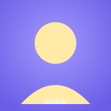

1 Vấn đề: ép ảnh vào khung khác tỉ lệ Cơ bản
Ảnh gốc photo.svg là ảnh ngang 640×420 (tỉ lệ ≈ 1.52:1).
Nếu nhồi nó vào một khung vuông 160×160 bằng width:100%; height:100% thì
ảnh bị kéo méo — đây chính là lý do ta cần object-fit.

◂ Trái: ảnh gốc tỉ lệ tự nhiên | Phải: nhồi vào khung vuông → mặt trời thành hình trứng, ngọn núi bị bè ra (méo).
/* Khung vuông cố định, ảnh ngang bị ép → MÉO */
.frame { width: 160px; height: 160px; overflow: hidden; }
.frame img { width: 100%; height: 100%; } /* chưa có object-fit → kéo méo */Khi ép width và height không khớp tỉ lệ ảnh gốc, trình duyệt
kéo giãn từng chiều độc lập nên ảnh biến dạng. object-fit ra đời để
xử lý đúng việc này — quyết định ảnh vừa khung theo cách nào.
2 object-fit: fill — mặc định Cơ bản
fill là giá trị mặc định: ảnh bị kéo/nén để lấp đầy
toàn bộ khung, không giữ tỉ lệ gốc → có thể méo. Nó đúng bằng kết quả "không đặt object-fit" ở mục 1.
Lấp đầy 100% khung nhưng ảnh ngang bị nén lại theo chiều dọc → méo.
img { object-fit: fill; } /* mặc định: lấp đầy, KHÔNG giữ tỉ lệ → méo */Vì fill là mặc định nên ảnh trong khung cố định luôn có nguy cơ méo
nếu bạn quên đặt một giá trị object-fit khác. Hiếm khi ta thực sự muốn fill.
3 object-fit: contain — thu vừa, chừa lề Cơ bản
contain thu/phóng ảnh sao cho toàn bộ ảnh nằm gọn trong khung và
giữ nguyên tỉ lệ → không méo, không mất phần nào, nhưng để lộ lề trống
(letterbox) ở hai bên hoặc trên–dưới.
Ảnh ngang được thu vừa bề ngang khung → còn dải nền sọc trống trên & dưới.
img { object-fit: contain; } /* giữ tỉ lệ, thấy trọn ảnh, có lề trống */Dùng contain khi không được cắt mất chi tiết — ví dụ logo, biểu đồ,
ảnh sản phẩm cần thấy trọn vẹn. Có thể tô màu phần lề bằng background của khung.
4 object-fit: cover — lấp đầy & cắt thừa Phổ biến nhất
cover phóng ảnh để lấp đầy toàn khung mà vẫn giữ tỉ lệ (không méo);
phần ảnh dư ra ngoài khung sẽ bị cắt bỏ. Đây là lựa chọn được dùng nhiều nhất
cho thumbnail, banner, avatar.
Lấp kín khung vuông, không méo; bù lại hai mép trái–phải của ảnh ngang bị cắt.
img { object-fit: cover; } /* lấp đầy + giữ tỉ lệ, cắt phần thừa — phổ biến nhất */cover kết hợp với object-position (mục 8) cho phép chọn giữ lại phần nào
của ảnh khi cắt — ví dụ luôn giữ khuôn mặt ở giữa.
5 object-fit: none — giữ nguyên cỡ gốc Nâng cao
none không co giãn ảnh — giữ nguyên kích thước pixel gốc, rồi
khung chỉ "soi" một vùng. Ảnh 640×420 lớn hơn khung 160×160 nên ta chỉ thấy phần giữa
(mặc định canh tâm), còn lại bị cắt.
Ảnh không bị thu nhỏ; khung chỉ hiện vùng 160×160 ở giữa ảnh gốc (zoom 100%).
img { object-fit: none; } /* giữ cỡ pixel gốc, cắt theo khung (mặc định lấy phần giữa) */none hữu ích khi cần hiển thị ảnh ở đúng độ phân giải gốc (sprite, ảnh pixel-art),
kết hợp object-position để chọn vùng cần soi.
6 object-fit: scale-down Nâng cao
scale-down so sánh kết quả của none và contain rồi
chọn cái có kích thước nhỏ hơn. Nói cách khác: nếu ảnh lớn hơn khung thì hành xử như
contain (thu nhỏ vừa khung); nếu ảnh nhỏ hơn khung thì như none (không phóng to).
Ảnh gốc (640×420) lớn hơn khung nên scale-down cho kết quả giống contain
(thu vừa, chừa lề). Nếu ảnh nhỏ hơn khung, nó sẽ giống none (không phóng to gây vỡ ảnh).
img { object-fit: scale-down; } /* = min(none, contain): không phóng to, chỉ thu nhỏ khi cần */Chọn scale-down khi muốn không bao giờ phóng to ảnh nhỏ (tránh vỡ hạt)
nhưng vẫn thu gọn ảnh quá lớn cho vừa khung.
7 So sánh trực quan 5 giá trị Quan trọng
Cùng một ảnh photo.svg ngang, cùng khung vuông 160×160 — chỉ đổi object-fit.
Đặt cạnh nhau sẽ thấy ngay khác biệt: méo, lề trống hay bị cắt.
Đọc nhanh: fill = méo · contain = thấy trọn ảnh + lề trống · cover = lấp kín, mất mép · none = phóng 100% xén giữa · scale-down = bản nhỏ hơn giữa none và contain.
8 object-position — canh ảnh trong khung Nâng cao
Khi cover (hay none) cắt bớt ảnh, object-position quyết định
giữ lại phần nào. Cú pháp giống background-position: từ khoá
(left/right/top/bottom/center), phần trăm % hoặc px. Mặc định là 50% 50% (giữa).
img {
object-fit: cover;
object-position: right top; /* giữ góc trên–phải khi cắt */
}
/* Cũng nhận: center · left bottom · 80% 20% · 20px 0 ... (như background-position) */Với ảnh chân dung, đặt object-position: center top để luôn giữ khuôn mặt
khi khung cắt bớt phần dưới.
9 Ứng dụng: thumbnail · avatar · ảnh sản phẩm đồng cỡ Thực chiến
Bài toán kinh điển: nhiều ảnh kích thước/tỉ lệ khác nhau cần hiện cùng một cỡ
gọn gàng. Lời giải: object-fit: cover + đặt khung bằng aspect-ratio (hoặc width/height).
9.1 — Thư viện thumbnail 4:3 đồng nhất


.gallery img {
width: 100%;
aspect-ratio: 4 / 3; /* khung đồng nhất, khỏi đặt height cứng */
object-fit: cover; /* ảnh nguồn khác tỉ lệ vẫn lấp gọn */
}9.2 — Avatar tròn
9.3 — Thẻ sản phẩm vuông 1:1
Sản phẩm A
Sản phẩm B
Sản phẩm C
Mẹo thực chiến: cover + aspect-ratio là combo "đồng cỡ ảnh" hiện đại,
sạch hơn cách đặt height cứng vì khung tự co theo bề rộng (responsive).
10 Bảng tra nhanh & mẹo Tổng kết
| Giá trị | Giữ tỉ lệ? | Lấp đầy khung? | Hệ quả |
|---|---|---|---|
fill (mặc định) | Không | Có | Kéo/nén lấp đầy → méo |
contain | Có | Không | Thấy trọn ảnh, có lề trống |
cover | Có | Có | Lấp đầy, cắt phần thừa — phổ biến nhất |
none | Có (cỡ gốc) | Tuỳ | Không co giãn, cắt theo khung |
scale-down | Có | Tuỳ | Nhỏ hơn giữa none và contain |
| Thuộc tính | Công dụng | Ví dụ |
|---|---|---|
object-position | Chọn phần ảnh giữ lại khi cắt | center top, right bottom, 80% 20% |
aspect-ratio | Định khung tỉ lệ cố định mà không cần height | 4 / 3, 1 / 1, 16 / 9 |
overflow | Cần cho khung cắt khi dùng none | hidden |
Mẹo 1. Cần thumbnail/avatar/banner đồng cỡ đẹp đều → dùng
object-fit: cover. Đây là 90% trường hợp thực tế.
Lưu ý 2. object-fit chỉ có tác dụng khi ảnh có
kích thước cố định (đặt width & height, hoặc aspect-ratio).
Thiếu kích thước thì không có gì để "fit".
Phạm vi 3. object-fit/object-position chỉ áp dụng cho
nội dung thay thế như <img>, <video>, <object>.
Để lấp ảnh nền cho <div> hãy dùng background-size: cover thay thế.
Ghi nhớ. Méo? → đang là fill mặc định.
Muốn thấy trọn ảnh → contain. Muốn lấp kín đẹp → cover. Chọn vùng giữ lại → object-position.